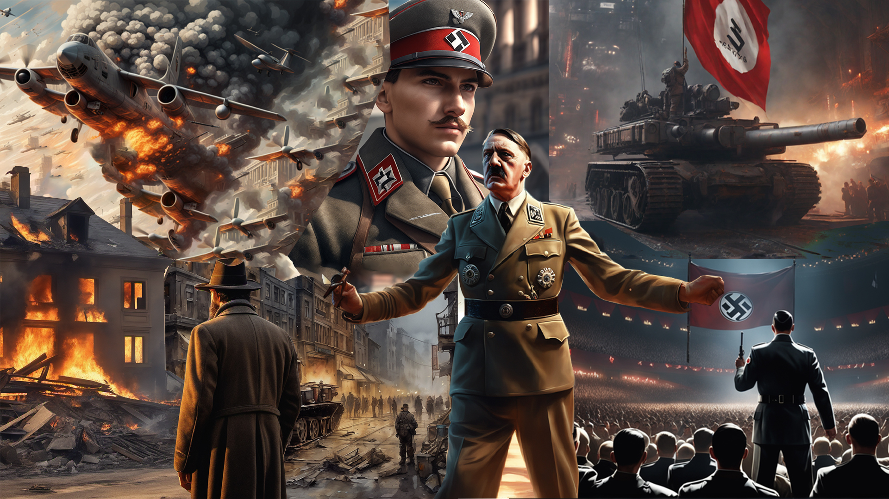

Perkembangan Awal Nazi

Partai Nazi adalah sebuah partai politik yang pernah didirikan di
Jerman pada sekitar 1920-an. Memiliki nama lengkap Partai Buruh
Nasional-Sosialis Jerman, partai ini mengalami perkembangan pesat
sejak Adolf Hitler bergabung dan diangkat menjadi ketua partai. Di
bawah kepemimpinan Hitler, Partai Nazi menjadi kekuatan politik
utama di Jerman yang memerintah antara 1933 hingga 1945 secara
totaliter. Pada saat itu, Hitler juga diangkat oleh Presiden Paul
von Hindenburg sebagai Kanselir Jerman. Partai Nazi kemudian
mendeklarasikan Jerman sebagai negara satu partai dengan Hitler
sebagai pemimpin tertingginya.
Berdirinya Partai Buruh Jerman
Setelah Perang Dunia I berakhir, Jerman sebagai pihak yang kalah
dalam pertempuran mengalami gejolak politik yang hebat. Situasi
tersebut kemudian melahirkan frustasi di kalangan masyarakatnya,
yang kemudian semakin menguatnya semangat nasionalisme-rasis di
seluruh Jerman. Kelompok-kelompok nasionalisme-rasis, yang
sebenarnya muncul di Jerman sejak akhir abad ke-19, itu
menyalahkan orang Yahudi atas kekalahan Jerman. Mereka pun
menentang Republik Weimar, sebuah pemerintahan demokratis yang
baru di Jerman, dan Perjanjian Versailles. Pada 5 Januari 1919,
Anton Dexler, seorang nasionalis Jerman, mendirikan Partai Buruh
Jerman. Dexter adalah seorang yang memiliki pandangan antisemit,
anti-monarkis dan anti-Marxis, serta percaya pada superioritas
bangsa Jerman, yang mereka klaim sebagai bagian dari ras Arya.
Hitler kemudian bergabung dengan Partai Buruh Jerman pada
September 1919 dan menjadi pemimpin propaganda.
Diubah menjadi Partai Nazi
Bersama Hitler, Partai Buruh Jerman perkembangan pesat dan
anggotanya bertambah banyak. Dalam setiap pidatonya, Hitler selalu
mencela Perjanjian Versailles dan mengeluarkan kata-kata
antisemitisme, menyalahkan Yahudi atas masalah-masalah Jerman.
Hitler dengan cemerlang memanfaatkan kekacauan di masa-masa awal
Republik Weimar, guna menciptakan suatu gerakan yang pada akhirnya
menjadi kekuatan politik utama di Jerman. Pada 1920, nama Partai
Buruh Jerman diubah oleh Hitler menjadi Nationalsozialistische
Deutsche Arbeiterpartei (NSDAP) atau Partai Buruh
Nasional-Sosialis Jerman, yang disingkat menjadi Partai Nazi.
Memasuki tahun 1921, Hitler sangat mahir dalam melakukan
propaganda dan namanya pun semakin populer di luar partainya. Pada
Juli 1921, Hitler resmi dinobatkan sebagai ketua partai. Partai
Nazi adalah gerakan radikal sayap kanan yang berpusat di Munich
dan berideologi rasis, nasionalis, anti-demokrasi, antisemit,
serta anti-Marxis.
Kudeta Beer Hall
Pada 1921, Jerman ditagih oleh para pemenang Perang Dunia I untuk
membayar kerusakan yang disebabkan oleh perang. Hal ini
mengakibatkan terjadinya inflasi dan angkatan bersenjata Prancis
mulai menduduki sebuah kawasan industri di Ruhr karena Jerman
tidak mampu membayar. Nazi yang dikomandoi Hitler merasakan bahwa
saat itulah waktu yang tepat untuk menyerang. Mereka merencanakan
untuk menculik para pemimpin pemerintahan Bavaria dan memaksa
mereka mengangkat Hitler sebagai pemimpin yang baru. Dengan
bantuan Jenderal Erich Ludendorff, Nazi akan memproklamasikan
pemberontakan secara menyeluruh dan menjatuhkan pemerintahan
demokratis Jerman di Berlin. Rencana ini akan dilaksanakan saat
penyelenggaraan pertemuan besar para pelaku bisnis di Munich Beer
Hall. Pada 8 November 1923, Hitler dengan puluhan ribu pengikutnya
mengepung Beer Hall dan melakukan kudeta. Akan tetapi, harapannya
untuk menjadi pemimpin baru Jerman pupus karena tentara Jerman
melawan pasukan Nazi. Sebagai buntut dari insiden tersebut, Hitler
dijatuhi hukuman lima tahun penjara karena bersalah atas
pemberontakan. Setelah menjalani sembilan bulan di balik jeruji
besi, Hitler akhirnya bebas dan mulai membangun kembali Partai
Nazi untuk mendapatkan kekuasaan melalui pemilu.
Kebangkitan Partai Nazi
Pada pemilihan yang diselenggarakan pada Juli 1932, Partai Nazi
berhasil merebut 230 dari 608 kursi di Parlemen Jerman. Satu tahun
kemudian, Hitler diangkat menjadi Kanselir Jerman dan pemerintahan
Nazi segera mengendalikan setiap aspek kehidupan di Jerman. Masa
pemerintahan Nazi yakni antara 1933-1945 adalah sebuah periode
yang kemudian dikenal sebagai Nazi Jerman atau Reich Ketiga. Sejak
1933, Nazi menjadi partai tunggal di Jerman dan Hitler menerapkan
berbagai kebijakan yang memicu konflik. Pasalnya, mereka meyakini
bahwa bangsa Jerman adalah ras unggul, sedangkan kaum Yahudi,
penderita cacat mental dan fisik, dan komunis adalah ras inferior
yang harus dimusnahkan. Pada kebijakan luar negerinya, Hitler
menarik negaranya dari Liga Bangsa-Bangsa serta membatalkan
Perjanjian Versailles pada 1935. Pada paruh kedua 1930-an, Nazi
Jerman berhasil mencaplok Austria, Cekoslowakia, dan Polandia.
Selama enam tahun pertama pemerintahannya, kebijakan luar negeri
Partai Nazi telah memicu terjadinya Perang Dunia II. Di saat yang
sama, kampanye anti-Yahudi menjadi semakin ganas dan puncaknya
saat peristiwa Holocaust, yakni genosida terhadap sekitar enam
juga kaum Yahudi di Eropa selama Perang Dunia II.
Pembubaran Partai Nazi
Pada 20 Juli 1944, mulai muncul upaya terorganisir untuk
menggulingkan Hitler dan Partai Nazi. Harapan tersebut terwujud
satu tahun kemudian, saat Jerman kalah dalam Perang Dunia II dan
Hitler melakukan bunuh diri. Setelah itu, Jerman diduduki oleh
pasukan Sekutu, yang melarang Partai Nazi dan menyatakannya
sebagai organisasi kriminal. Pasukan Sekutu kemudian mengadili
para pemimpin Nazi atas kejahatan kemanusiaan yang dilakukan
antara 1933-1945. Mereka juga berusaha untuk membersihkan pengaruh
Partai Nazi dari setiap aspek kehidupan Jerman.